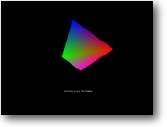

8. Vértices Objetivo: Editar vértices
de uma malha em tempo-real |
 |
Se você
já leu anteriormente a seção sobre malhas então
você já saberá muito do que faremos neste tutorial. Se não
leu, saia daqui e vá ler!
Vamos recapitular:
Cada MALHA (um objeto 3D), é composto de SUPERFÍCIES.
Cada SUPERFÍCIE tem um BRUSH.
A cada BRUSH pode ser atribuídas 8 texturas diferentes.
(que podem ser sobrepostas para criar novos efeitos)
Cada SUPERFÍCIE é composta de TRIÂNGULOS.
Cada TRIÂNGULO é composto de 3 VÉRTICES.
Assim, armado com essa informação você já deve saber como é composto um objeto 3D. Vamos pegar um quadrado plano como exemplo. Ele é composto de 4 vértices e 2 triângulos. O que nós estamos planejando fazer é pegar 2 desses vértices e mudar suas coordenadas.
De fato, como mencionado
em "Introdução a Malhas", nós podemos até
mesmo mudar a cor dos vértices em tempo-real. Execute o exemplo. O que
você vê é um objeto quadrado (que está girando lentamente
no eixo Z), sendo deformado em 2 cantos - enquanto os vértices mudam
de cor.
É um efeito muito fácil para criar, eu não vou entrar em
muitos detalhes sobre como/por que o programa funciona, mas aqui está
um rápido informe se você estiver interessado:
Nós definimos a variável 'COUNTER' (contador) que faz exatamente
isso... ser usada como um contador. Toda vez que o programa passa pelo loop
principal, o valor é incrementado. O valor do contador corresponde a
que direção nós deveríamos puxar os vértices.
Se o contador alcança 1000, então mudamos a cor de cada vértice
para uma seleção aleatória, antes de resetar o valor do
contador.
Demos uma olhada:
| Graphics3D 800,600 SetBuffer BackBuffer() camera=CreateCamera() CameraViewport camera,0,0,800,600 light=CreateLight() plane=LoadMesh("plane.3ds") PositionEntity plane,0,0,25 EntityFX plane,2 surface=GetSurface(plane,CountSurfaces(plane)) VertexColor surface,0,255,0,0 VertexColor surface,1,0,255,0 VertexColor surface,2,0,0,255 VertexColor surface,3,255,0,255 While Not KeyHit(1) TurnEntity plane,0,0,.3 counter=counter+1 If counter<500 Then x1#=-.01 y1#=-.01 x2#=+.01 EndIf If counter>499 Then x1#=+.01 y1#=+.01 x2#=-.01 EndIf xx#=VertexX(surface,0) yy#=VertexY(surface,0) zz#=VertexZ(surface,0) VertexCoords surface,0,xx+x1,yy+y1,zz xx#=VertexX(surface,2) yy#=VertexY(surface,2) zz#=VertexZ(surface,2) VertexCoords surface,2,xx+x2,yy+y1,zz If counter=1000 Then counter=0 VertexColor surface,0,Rnd#(0,255),Rnd#(0,255),Rnd#(0,255) VertexColor surface,1,Rnd#(0,255),Rnd#(0,255),Rnd#(0,255) VertexColor surface,2,Rnd#(0,255),Rnd#(0,255),Rnd#(0,255) VertexColor surface,3,Rnd#(0,255),Rnd#(0,255),Rnd#(0,255) EndIf UpdateWorld RenderWorld Text 350,500,"Controle de Vértices" Flip Wend End |
Então como
nós chegamos aos vértices do objeto?
Bem, nós carregamos o objeto com o comando LoadMesh, o objeto que nós
estamos carregando é chamado Plane.3ds.
| EntityFX plane,2 |
Aqui está um comando que nós não vimos antes! Este comando
realmente é mais um selecionador de efeitos que qualquer outra coisa.
Mas definindo valores nós podemos ter acesso à entidade de diferentes
modos. O valor '2' serve para habilitar a coloração de vértices
em toda a entidade, e por padrão é desativado.
Estes são os efeitos possíveis:
| 0 = Nenhum efeito (padrão) |
Há outro comando bem parecido com o EntitiyFX chamado BrushFX. Ele usa os mesmos valores, mas em vez de mudar a entidade inteira ele afeta um único brush. (Se lembre que uma malha tem superfícies, com brushes aplicados a elas)
| surface=GetSurface(plane,CountSurfaces(plane)) |
Para chegar aos vértices nós temos primeiro que
desbloqueá-los. Nós fazemos isto criando uma variável que
guarda o endereço de memória das superfícies da malha.
Se acalme! Nós não temos que sujar nossas mãos com cálculos
complicados. Ao invés disso nós usamos o comando GetSurface, que
primeiro pede o nome da malha, e depois a quantidade de superfícies que
ela tem. Como você pode ver eu usei o comando CountSurfaces para fazer
isto para mim.
| VertexColor surface,0,255,0,0 VertexColor surface,1,0,255,0 VertexColor surface,2,0,0,255 VertexColor surface,3,255,0,255 |
Antes de entrar no loop principal, eu defini a cada vértice com uma cor diferente. Isto nos dá um efeito de arco-íris agradável! Como você pode ver nós passamos a variável 'surface' para o comando VertexColor, como também o número do vértice (0-3, uma vez que nosso objeto só tem 4 pontos), seguido pelos valores de cor vermelho, verde e azul. (Deve estar entre 0 (Escuro) e 255 (Claro))
| xx#=VertexX(surface,0) yy#=VertexY(surface,0) zz#=VertexZ(surface,0) |
Como eu quero que as coordenadas
da malha mudem todo o tempo, eu não posso fixar isto com um valor que
não muda. Em toda atualização eu tenho que adquirir as
coordenadas atuais e ligeiramente as alterar (somando um valor às coordenadas
X e Y).
Eu faço isto adquirindo os vértices X,Y e Z atuais - usando os
vários comandos que retornam as coordenadas dos vértices!
| VertexCoords surface,0,xx+x1,yy+y1,zz |
Como você provavelmente percebeu, esta é a instrução principal para mudar as posições de vértice atuais. Precisa ser chamado com a variável da superfície, seguido pelos novos valores X, Y e Z.
É isso aí!
Mas por que você iria querer mudar as coordenadas?
Todos os jogos alteram seus objetos, é só o caso de descobrir
como e onde eles fazem isso. Imagine que você projetou um simulador de
direção. Não seria agradável quando você chocasse
o carro que o dano aparecesse? Talvez amassar a lataria... ou quebrar um vidro.
Como certos jogos de carros de sucesso, eles usam exatamente o mesmo método.
Você tem que implementar isso no B3D - Você quer isto... está
lá, agora vá e use sabiamente
!
Mais
tutoriais a caminho..
Tutoriais escritos por by Paul Gerfen
(c) 2001 GameCodingUK